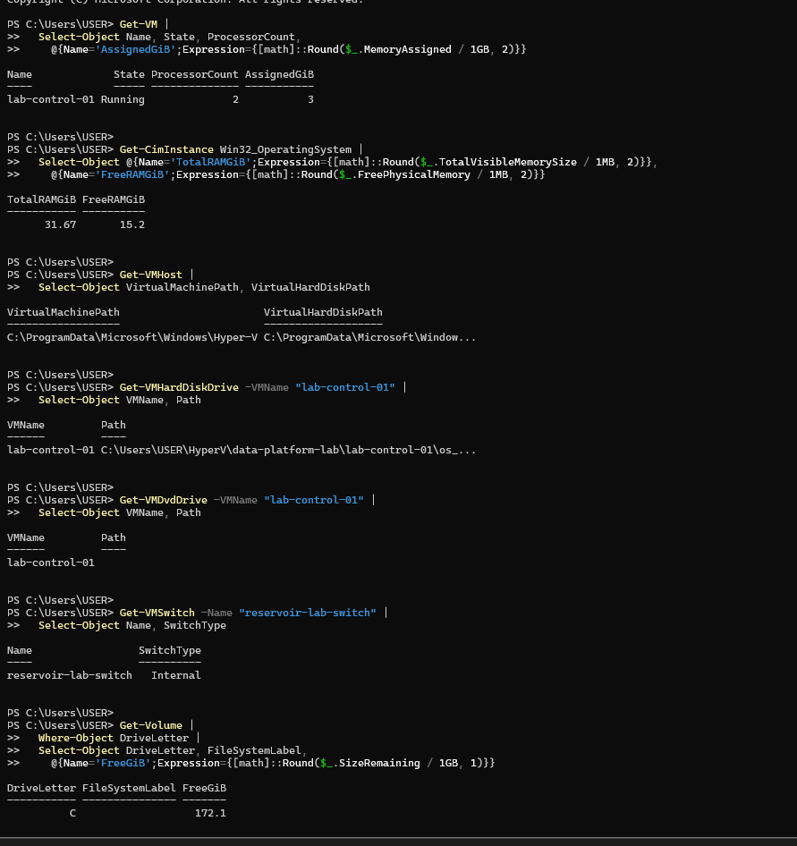
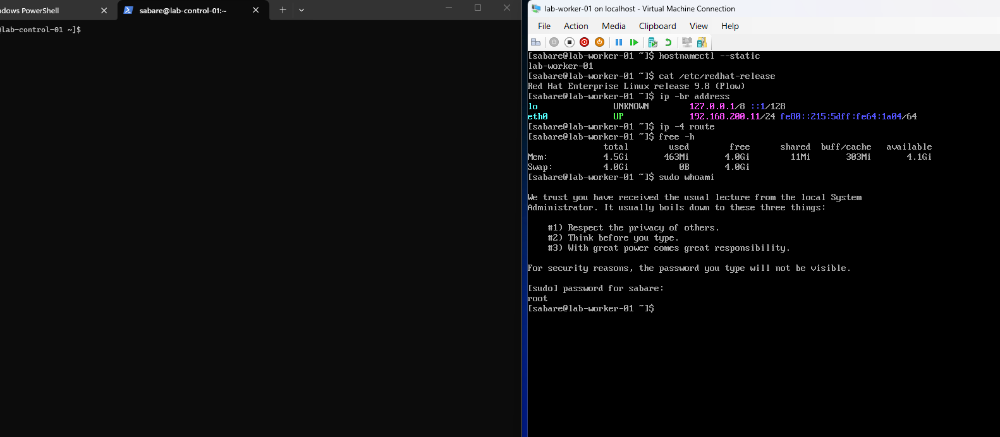
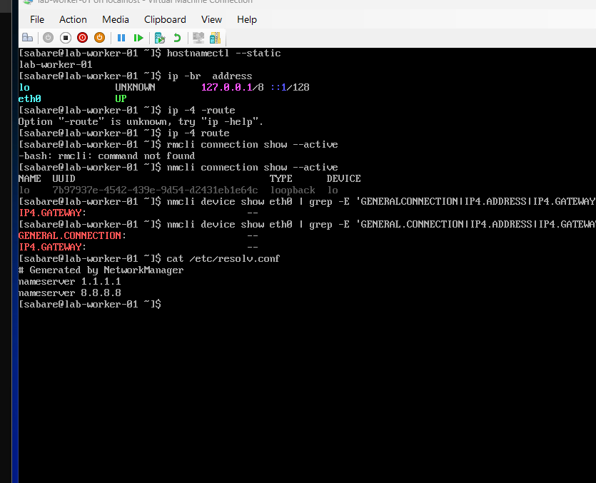
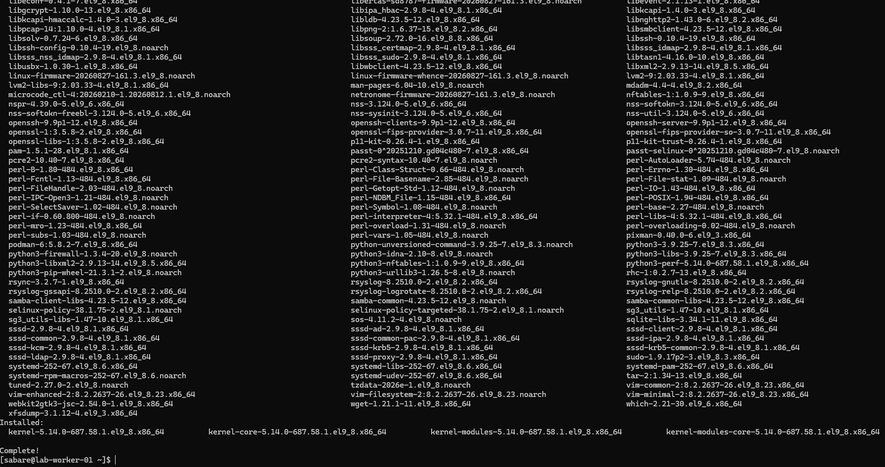
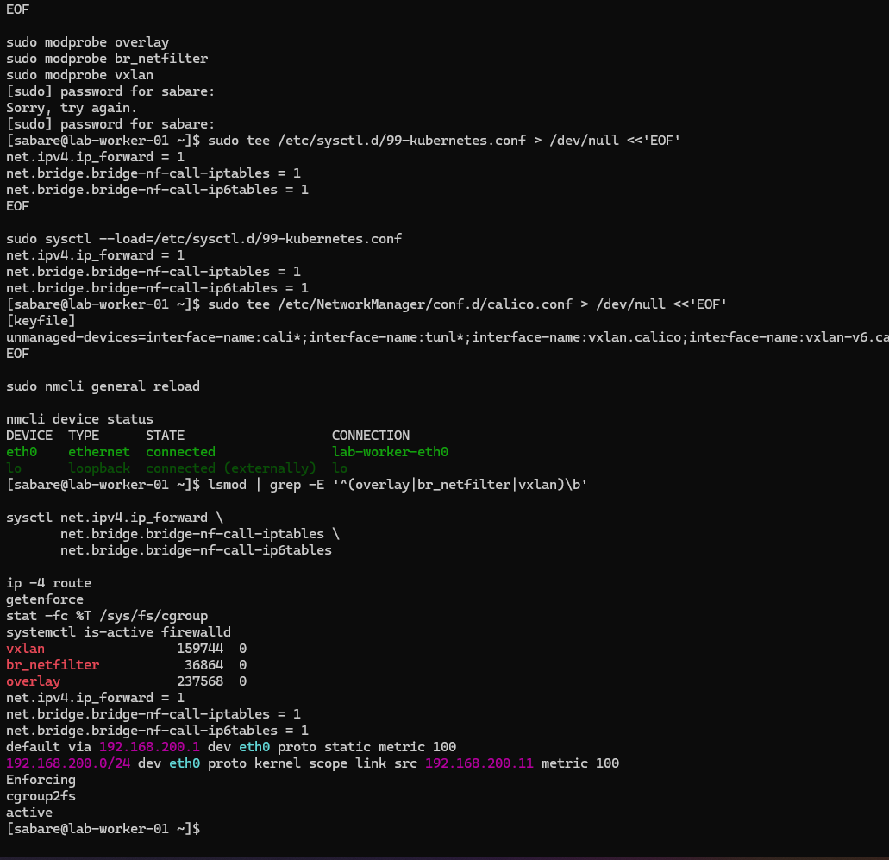
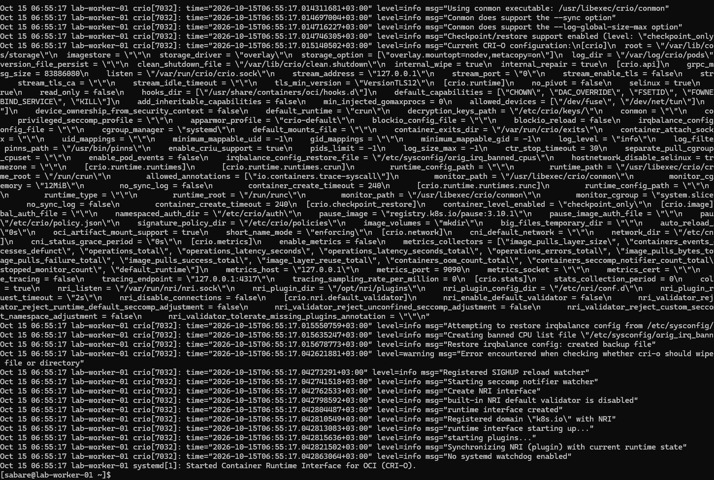
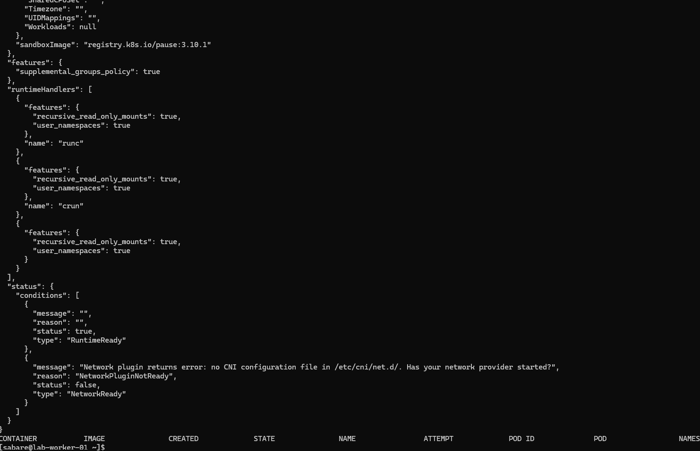
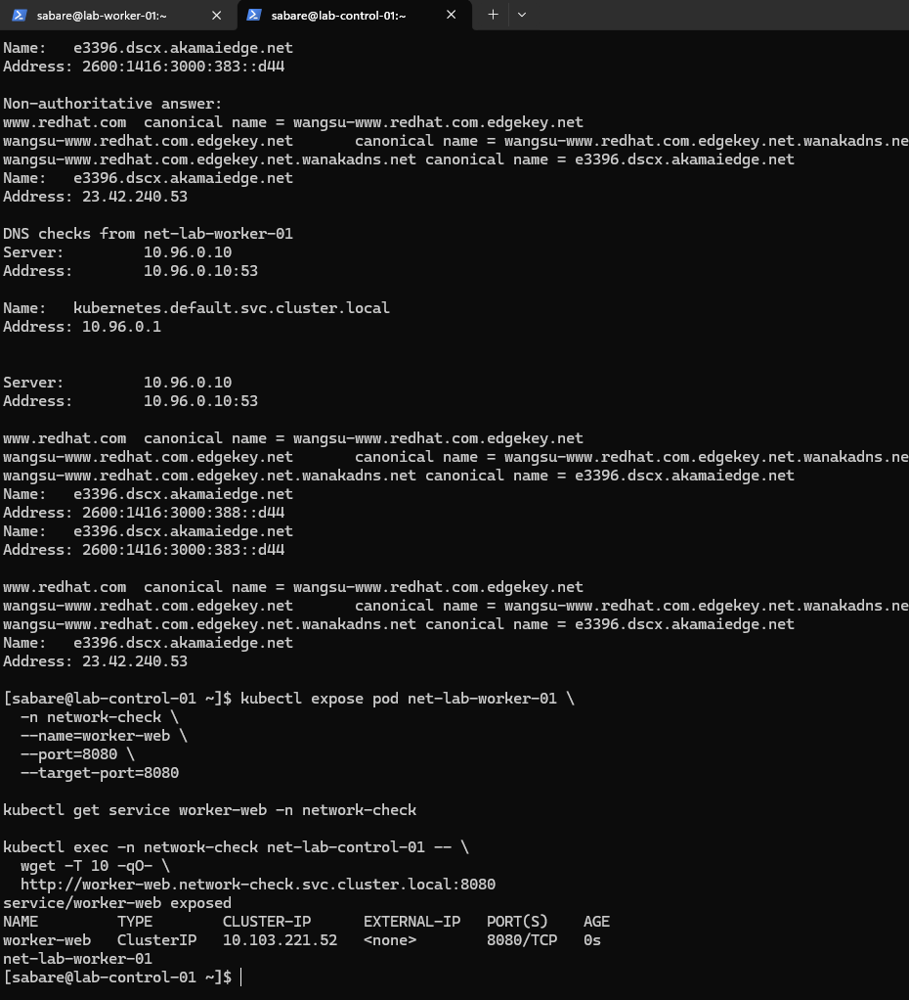
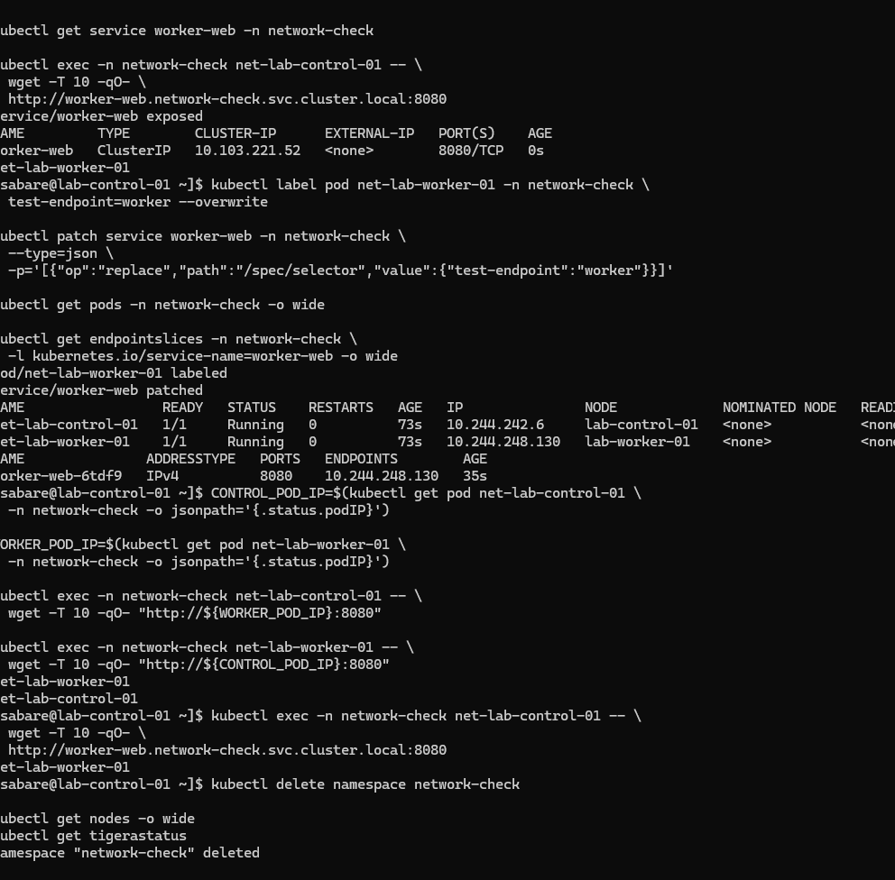

First worker: RHEL setup, Kubernetes join and network verification¶
Created 2026-10-14; updated 2026-10-15 (Africa/Nairobi). Commands run in Windows PowerShell as Administrator unless labelled RHEL. VM creation below is historical: do not rerun it against the existing worker.
Verified state¶
lab-worker-01 was created Off and has since booted installed RHEL 9.8. It has
Generation 2, two virtual CPUs and fixed
5120 MiB RAM. Secure Boot is On using MicrosoftUEFICertificateAuthority. Its
network adapter uses reservoir-lab-switch, and its new 40 GB dynamically
expanding disk is C:\Users\USER\HyperV\data-platform-lab\lab-worker-01\os.vhdx.
The creation and configuration results were supplied as terminal text.
Installer completion and installed-system login are confirmed. The network was subsequently repaired, time synchronisation verified and registration completed. The package upgrade completed and the user confirmed successful reboot checks. Swap stayed disabled after a further reboot. The worker joined Kubernetes, and both nodes are reported Ready. Cross-node HTTP, DNS and Service routing tests passed; the temporary test namespace was deleted. ISO ejection was instructed but not separately evidenced. This is a fresh installation, not a control-plane clone.
Capacity checks¶
Before creation, the host reported 31.67 GiB total RAM, 15.2 GiB free RAM and 172.1 GiB free on C:. The control-plane VM was Running with two CPUs and 3 GiB assigned. Its DVD path was blank, and the lab switch was Internal.

Get-VM | Select-Object Name, State, ProcessorCount,
@{Name='AssignedGiB';Expression={[math]::Round($_.MemoryAssigned / 1GB, 2)}}
Get-VMHost | Select-Object VirtualMachinePath, VirtualHardDiskPath
Get-VMDvdDrive -VMName "lab-control-01" | Format-List VMName, Path
Get-VMSwitch -Name "reservoir-lab-switch" | Select-Object Name, SwitchType
These checks establish available resources and the existing network. Free memory and disk values are a snapshot, not a permanent reservation.
Create and configure (completed)¶
$workerName = "lab-worker-01"
$workerPath = "C:\Users\USER\HyperV\data-platform-lab\lab-worker-01"
$workerDisk = Join-Path $workerPath "os.vhdx"
if (Get-VM -Name $workerName -ErrorAction SilentlyContinue) {
throw "Worker VM already exists. Inspect it before continuing."
}
if (Test-Path -LiteralPath $workerPath) {
throw "Worker folder already exists. Inspect it before continuing."
}
New-Item -ItemType Directory -Path $workerPath -ErrorAction Stop
New-VM -Name $workerName -Generation 2 -MemoryStartupBytes 5GB `
-Path $workerPath -NewVHDPath $workerDisk -NewVHDSizeBytes 40GB `
-SwitchName "reservoir-lab-switch" -ErrorAction Stop
Set-VMMemory -VMName $workerName -DynamicMemoryEnabled $false -StartupBytes 5GB
Set-VMProcessor -VMName $workerName -Count 2
Set-VMFirmware -VMName $workerName -EnableSecureBoot On `
-SecureBootTemplate "MicrosoftUEFICertificateAuthority"
Set-VM -Name $workerName -AutomaticStopAction ShutDown
Generation 2 provides UEFI firmware. Fixed memory avoids the earlier control-plane Dynamic Memory issue. The virtual disk grows as data is written, up to 40 GB. The certificate-authority template supports Linux bootloaders. ShutDown requests a graceful guest shutdown when the host shuts down.
Get-VM -Name $workerName | Select-Object Name, State, Generation, ProcessorCount
Get-VMMemory -VMName $workerName | Select-Object DynamicMemoryEnabled,
@{Name='StartupMiB';Expression={$_.Startup / 1MB}}
Get-VMFirmware -VMName $workerName | Select-Object SecureBoot, SecureBootTemplate
Get-VMNetworkAdapter -VMName $workerName | Select-Object VMName, SwitchName
Get-VMHardDiskDrive -VMName $workerName | Format-List VMName, Path
Observed: Off, Generation 2, two CPUs, DynamicMemoryEnabled False, 5120 MiB, Secure Boot On with the chosen template, correct switch and disk path.
Locate ISO and boot installer (historical instructions)¶
The earlier control-plane installation used the verified RHEL 9.8 x86_64 DVD ISO in Downloads. Confirm it still exists before attaching it:
$workerName = "lab-worker-01"
$rhelIso = Join-Path $env:USERPROFILE "Downloads\rhel-9.8-x86_64-dvd.iso"
Test-Path -LiteralPath $rhelIso
Get-Item -LiteralPath $rhelIso -ErrorAction Stop | Select-Object FullName, Length
If missing, search Downloads and use the actual returned path:
Get-ChildItem -LiteralPath "$env:USERPROFILE\Downloads" `
-Filter "*rhel*.iso" -File -Recurse | Select-Object FullName
Once confirmed, attach the media and place DVD first in the boot order:
$workerDvd = Get-VMDvdDrive -VMName $workerName
if ($workerDvd) {
$workerDvd | Set-VMDvdDrive -Path $rhelIso -ErrorAction Stop
} else {
Add-VMDvdDrive -VMName $workerName -Path $rhelIso -ErrorAction Stop
}
$workerDvd = Get-VMDvdDrive -VMName $workerName
Set-VMFirmware -VMName $workerName -FirstBootDevice $workerDvd -ErrorAction Stop
Get-VMDvdDrive -VMName $workerName | Format-List VMName, Path
(Get-VMFirmware -VMName $workerName).BootOrder |
Format-Table BootType, Description -AutoSize
vmconnect.exe localhost $workerName
In Virtual Machine Connection, click Start, respond to the DVD boot prompt if shown, and select Install Red Hat Enterprise Linux 9.8. Choose English (United States) and continue to Installation Summary. The user subsequently confirmed reaching Installation Summary and completing installation. The following sections record first boot and network repair.
First boot and connectivity repair¶
The installed worker reported hostname lab-worker-01, RHEL 9.8, about 4.5 GiB
usable RAM and 4 GiB swap. sudo whoami returned root. SSH access was reported
working, but subsequent console diagnostics showed that Ethernet had lost its
IPv4 configuration. The exact cause of that transition is not established.

The corrected ip -4 route command returned no routes. eth0 was UP without an
IP address, and nmcli connection show --active listed only loopback. DNS
servers were present in resolv.conf but unreachable without working networking.
This was more than a DNS configuration problem.

The following commands created or reused a dedicated profile in the worker's Hyper-V console. Existing profiles were preserved:
if ! nmcli connection show "lab-worker-eth0" >/dev/null 2>&1; then
sudo nmcli connection add type ethernet \
con-name "lab-worker-eth0" ifname eth0 \
connection.autoconnect no
fi
sudo nmcli connection modify "lab-worker-eth0" \
connection.interface-name eth0 \
connection.autoconnect yes \
connection.autoconnect-priority 100 \
ipv4.method manual \
ipv4.addresses "192.168.200.11/24" \
ipv4.gateway "192.168.200.1" \
ipv4.dns "1.1.1.1 8.8.8.8" \
ipv4.ignore-auto-dns yes \
ipv4.never-default no
sudo nmcli connection up "lab-worker-eth0"
ip -br address
ip -4 route
nmcli connection show --active
ping -c 3 -W 2 192.168.200.1
getent ahostsv4 www.redhat.com
curl -I --connect-timeout 10 --max-time 30 https://www.redhat.com
The profile activated on eth0, the gateway replied, DNS resolved the hostname,
and HTTPS returned HTTP/2 301. Earlier curl errors omitted the numeric argument
after --max-time; the final command corrected that. The success screenshot
contains HTTP cookies and is excluded from public images. The user subsequently confirmed that networking survived the post-update reboot.
Time synchronisation and registration¶
Chrony selected a time source, reported Leap status Normal, and timedatectl
reported System clock synchronized yes with NTP active in Africa/Nairobi.
An earlier 501 Not authorised likely resulted from running the mutating
chronyc online command without sudo. The correct form is shown below; no
additional retry was needed once synchronisation was confirmed.
sudo systemctl enable --now chronyd
sudo chronyc online
chronyc sources -v
chronyc tracking
timedatectl
hostnamectl --static
sudo subscription-manager register
Enter Red Hat account credentials interactively. The first registration attempt reported invalid credentials; the second succeeded for lab-worker-01. The registration screenshots contain a system ID and account identifier and are not published. No passwords or registration IDs are recorded here.
Package update and reboot (completed)¶
These batches were run after registration. The supplied transaction screenshot shows Complete and installation of kernel 5.14.0-687.58.1.el9_8.x86_64. The user confirmed the reboot and subsequent checks succeeded:
sudo subscription-manager refresh
sudo subscription-manager repos \
--enable=rhel-9-for-x86_64-baseos-rpms \
--enable=rhel-9-for-x86_64-appstream-rpms
sudo dnf repolist --enabled
sudo dnf makecache --refresh
sudo dnf upgrade --refresh
Refresh retrieves account information; BaseOS and AppStream supply system and application packages. makecache checks metadata access, while upgrade installs available package updates after confirmation.
Only after DNF finishes successfully, reboot and verify:
sudo reboot
Reconnect from Windows with ssh sabare@192.168.200.11, then run:
hostnamectl --static
uname -r
ip -br address
ip -4 route
free -h
swapon --show
timedatectl
Worker preparation and runtime¶
Swap was disabled with sudo swapoff -a, the swap entry in /etc/fstab was
commented after a dated backup, and sudo findmnt --verify --verbose checked
the file. sudo systemctl daemon-reload refreshed generated units. The user
confirmed swap remained off after reboot. Its LVM volume was not deleted.
The worker then received the same kernel and Calico host settings as the control plane. These are historical setup commands, not a request to repeat the install:
sudo tee /etc/modules-load.d/kubernetes.conf > /dev/null <<'EOF'
overlay
br_netfilter
vxlan
EOF
sudo modprobe overlay
sudo modprobe br_netfilter
sudo modprobe vxlan
sudo tee /etc/sysctl.d/99-kubernetes.conf > /dev/null <<'EOF'
net.ipv4.ip_forward = 1
net.bridge.bridge-nf-call-iptables = 1
net.bridge.bridge-nf-call-ip6tables = 1
EOF
sudo sysctl --load=/etc/sysctl.d/99-kubernetes.conf
sudo tee /etc/NetworkManager/conf.d/calico.conf > /dev/null <<'EOF'
[keyfile]
unmanaged-devices=interface-name:cali*;interface-name:tunl*;interface-name:vxlan.calico;interface-name:vxlan-v6.calico;interface-name:wireguard.cali;interface-name:wg-v6.cali
EOF
sudo nmcli general reload
Overlay supports container layers; bridge filtering and forwarding prepare Pod traffic; VXLAN supplies the cross-node tunnel. NetworkManager exclusions leave Calico interfaces under Calico's control. Modules and sysctls were verified live; their persistence after a subsequent reboot has not been separately tested.
Firewalld was backed up and disabling it was instructed to match the control plane and avoid interference with Calico. The provided baseline screenshot shows the earlier active state; a separate disabled-state capture was not supplied. SELinux remains Enforcing. Calico host firewall policy is not yet configured.
sudo cp -a /etc/firewalld "/root/firewalld-before-calico-$(date +%Y%m%d-%H%M%S)"
sudo systemctl disable --now firewalld
systemctl is-enabled firewalld
systemctl is-active firewalld
getenforce
CRI-O was installed from the stable v1.36 RPM repository with container-selinux
and started using sudo systemctl enable --now crio. Its log shows systemd
cgroup management, SELinux enabled and successful startup. Kubernetes packages
were installed targeting kubelet, kubeadm and kubectl 1.36.5 to match the control
plane, with cri-tools for runtime checks. Package installation was user-confirmed;
the screenshots here do not independently list every installed worker version.
sudo tee /etc/crictl.yaml > /dev/null <<'EOF'
runtime-endpoint: unix:///var/run/crio/crio.sock
image-endpoint: unix:///var/run/crio/crio.sock
timeout: 10
debug: false
EOF
sudo crictl version
sudo crictl info
RuntimeReady was true. NetworkReady was false because CNI configuration was not yet present; this was a pre-join state, not the final networking result.
Join the existing cluster¶
The worker reached the API at 192.168.200.10:6443 from 192.168.200.11. On the control plane, generate a short-lived complete command:
sudo kubeadm token create --ttl 1h --print-join-command |
sed 's/^kubeadm /sudo kubeadm /; s|$| --cri-socket unix:///var/run/crio/crio.sock --node-name lab-worker-01|'
Run the generated line on the worker. Do not publish its output: it contains a
bootstrap token. An initial attempt mistakenly retained angle-bracket placeholders
and duplicated sha256:; Bash interpreted redirection before kubeadm ran.
Using the complete generated line resolved this, with no reset required.
The successful join output is transcribed rather than published because its screenshot contains tokens. It reported healthy kubelet, TLS bootstrap and "This node has joined the cluster". It also warned about hostname resolution, the vendor kernel's upstream LTS classification and kubelet not being enabled at boot. Join success does not establish that every warning was resolved.
The worker was instructed to enable kubelet before testing:
sudo systemctl enable kubelet
systemctl is-enabled kubelet
systemctl is-active kubelet
The user reported both nodes Ready. Kubelet boot enablement was instructed after the warning, but its output and a post-join reboot are not separately evidenced.
Cross-node Pod, DNS and Service tests (passed)¶
All kubectl commands below run on lab-control-01. Two temporary BusyBox HTTP Pods were placed on different nodes. Only the test Pod tolerates the control-plane taint; the node's scheduling protection is preserved. This repeatable version assigns a unique Service selector from the start.
kubectl create namespace network-check
for node in lab-control-01 lab-worker-01; do
cat <<EOF | kubectl apply -f -
apiVersion: v1
kind: Pod
metadata:
name: net-${node}
namespace: network-check
labels:
app: network-check
test-node: ${node}
spec:
nodeSelector:
kubernetes.io/hostname: ${node}
tolerations:
- key: node-role.kubernetes.io/control-plane
operator: Exists
effect: NoSchedule
automountServiceAccountToken: false
containers:
- name: web
image: docker.io/library/busybox:1.37.0
command: ["/bin/sh", "-c"]
args:
- mkdir -p /www; hostname > /www/index.html; exec httpd -f -p 8080 -h /www
readinessProbe:
httpGet:
path: /
port: 8080
resources:
requests:
cpu: 10m
memory: 16Mi
limits:
cpu: 100m
memory: 64Mi
EOF
done
kubectl wait -n network-check --for=condition=Ready pod -l app=network-check --timeout=300s
kubectl get pods -n network-check -o wide
Stop and inspect Pod events if readiness times out. Once ready, test both paths:
CONTROL_POD_IP=$(kubectl get pod net-lab-control-01 -n network-check -o jsonpath='{.status.podIP}')
WORKER_POD_IP=$(kubectl get pod net-lab-worker-01 -n network-check -o jsonpath='{.status.podIP}')
kubectl exec -n network-check net-lab-control-01 -- wget -T 10 -qO- "http://${WORKER_POD_IP}:8080"
kubectl exec -n network-check net-lab-worker-01 -- wget -T 10 -qO- "http://${CONTROL_POD_IP}:8080"
for pod in net-lab-control-01 net-lab-worker-01; do
kubectl exec -n network-check "$pod" -- nslookup kubernetes.default.svc.cluster.local
kubectl exec -n network-check "$pod" -- nslookup www.redhat.com
done
kubectl expose pod net-lab-worker-01 -n network-check --name=worker-web --port=8080 --target-port=8080 --selector=test-node=lab-worker-01
kubectl get endpointslices -n network-check -l kubernetes.io/service-name=worker-web -o wide
kubectl exec -n network-check net-lab-control-01 -- wget -T 10 -qO- http://worker-web.network-check.svc.cluster.local:8080
Observed test Pod addresses were 10.244.242.6 on the control plane and 10.244.248.130 on the worker. Direct HTTP returned the opposite Pod's hostname in each direction. Internal and external DNS passed (user report, with worker lookups visible). Kubernetes DNS answered at 10.96.0.10 and resolved the API Service to 10.96.0.1. DNS answers containing IPv6 do not prove IPv6 connectivity.
During the original test, both Pods shared only app=network-check. Exposing the worker Pod therefore selected both Pods. We corrected the Service using a unique test-endpoint=worker label and replaced its selector. The screenshot verifies the resulting EndpointSlice had only 10.244.248.130. The subsequent Service-name HTTP request returned net-lab-worker-01, proving that request crossed nodes. The commands above incorporate a unique selector to avoid repeating that mistake.
After all tests passed, cleanup removed only the dedicated test namespace:
kubectl delete namespace network-check
kubectl get nodes -o wide
kubectl get tigerastatus
Namespace deletion is visible. The user reports both nodes remain Ready; the final node and Tigera status output is outside the screenshot. These tests prove cross-node HTTP and DNS/Service routing, not NetworkPolicy enforcement, throughput, high availability or production readiness.
Worker setup and test screenshots¶
Worker upgrade complete¶
DNF Complete and newly installed kernel 5.14.0-687.58.1.el9_8.x86_64.

Worker kernel networking¶
Modules loaded, forwarding enabled, Ethernet route, SELinux Enforcing and cgroup v2; firewalld still active at this historical point.

Worker CRI-O started¶
Service startup completed; a truncated warning is not interpreted as a verified diagnosis.

Worker runtime ready¶
RuntimeReady true and NetworkReady false before joining and Calico setup.

Worker DNS and initial Service test¶
Internal and external worker DNS succeed; initial Service selector was subsequently corrected.

Cross-node networking and cleanup¶
Worker-only EndpointSlice, HTTP in both directions, Service DNS request and namespace deletion.

Next steps¶
Confirm kubelet boot enablement and post-join reboot recovery, then continue with the planned second worker or supporting GitHub runner/local registry VM. Neither is claimed complete.